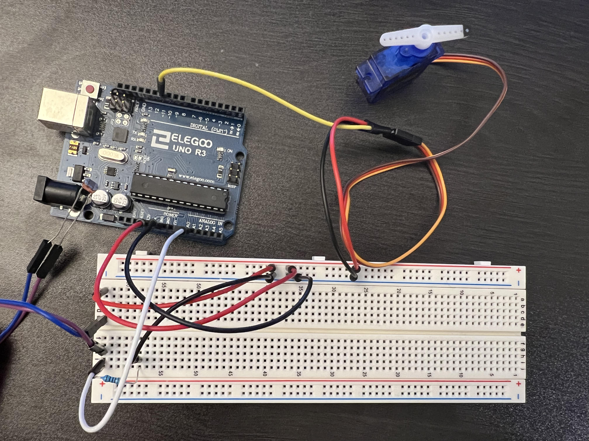
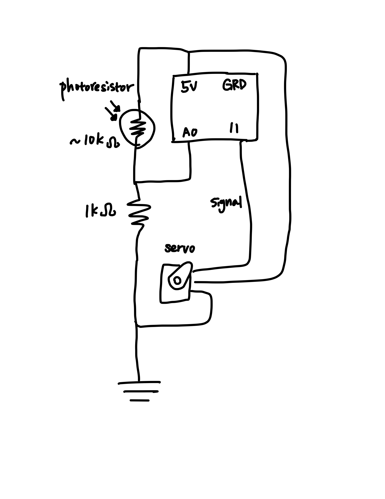
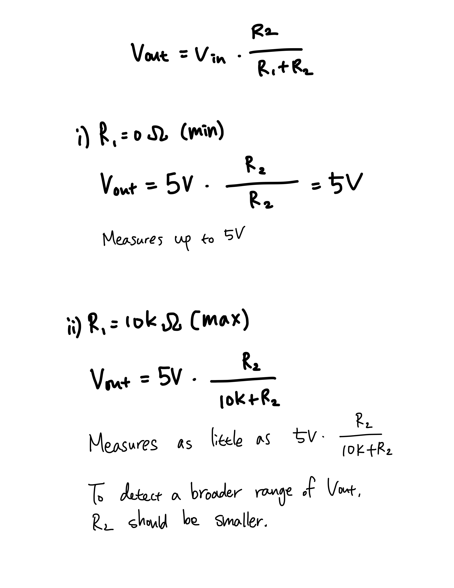

Input Output!

Cirucuit!

Schematic!

The voltage divider is made up of a photoresister (variable, up to 10k ohms) and a 1k ohm resistor.
Current through the voltage divider is read and written onto the servo motor.

The servo motor arm points from 0 degrees to 180 degrees based on the brightness of surrounding environment detected by the photoresistor. The servo motor was flipped upside down when I programmed it, so it actually goes from 180 degree position (dark) to 0 degree position (bright).
Code:
#include "<"Servo.h">" //import servo library
Servo myServo; //create servo object
void setup() {
Serial.begin(9600); //begin serial for printing
myServo.attach(11); //attach servo to pin 11
}
void loop() {
int current = analogRead(A0); //read current flowing from the voltage divider
int position = map (current, 0, 1023, 180, 0); //convert current value to servo position (degrees)
Serial.print("Point to: "); //print
Serial.print(position); //the servo position
Serial.println(" degrees."); //in degrees
if (position >= 170) { //if it's really dark
Serial.println("Oh it's DARK dark."); //you won't see much
}
if (position <= 10) { //if it's really bright
Serial.println("MY EYES!"); //express pain
}
delay(250); //wait 250 ms
myServo.write(position); //rotate hand according to the brightness value. This is in place of
analogWrite();
}